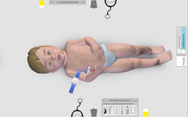

SimMed¶
SimMed is a project that uses a virtual patient on a multitouch table for medical education. It allows students to practice diagnosis and treatment of illnesses in a realistic way - something that is hard to do in traditional medical education.
SimMed is a joint project of the Charité Berlin and Archimedes Exhibitions GmbH.
You can get more information on the Archimedes Exhibitions page and in our article
